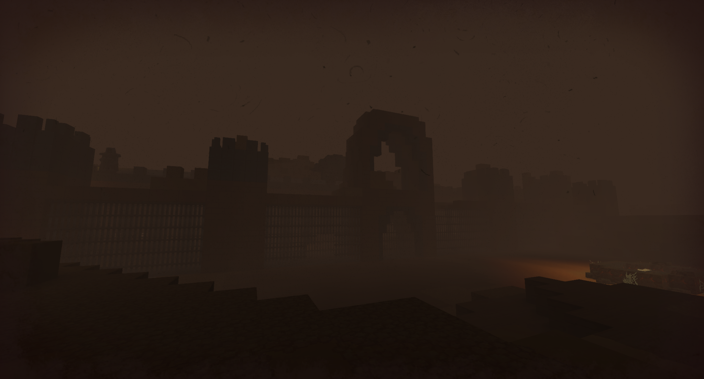
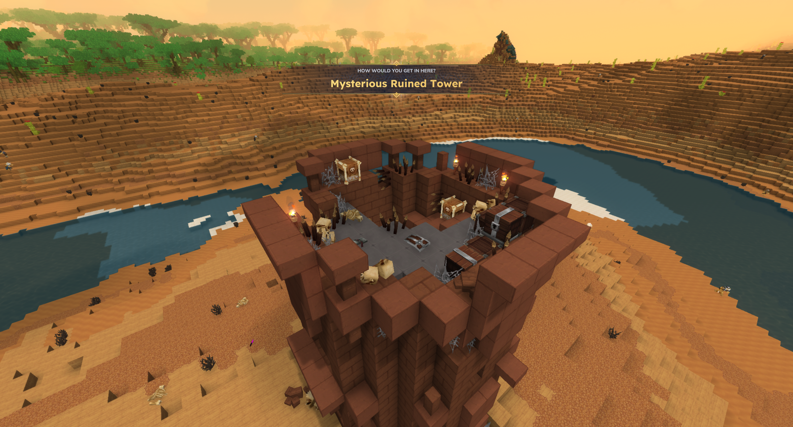
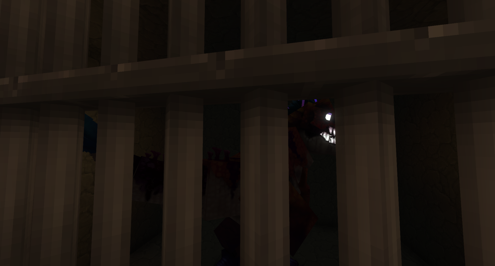
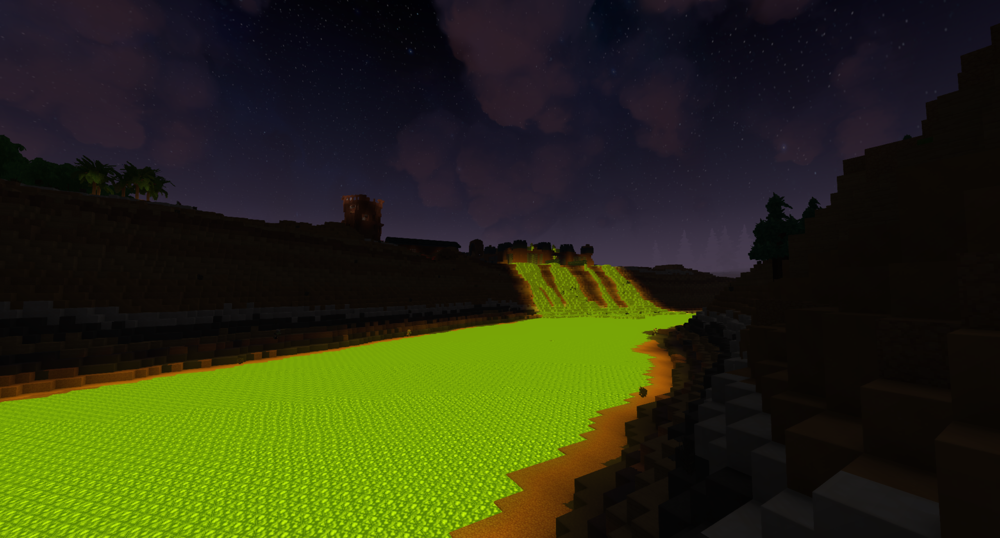
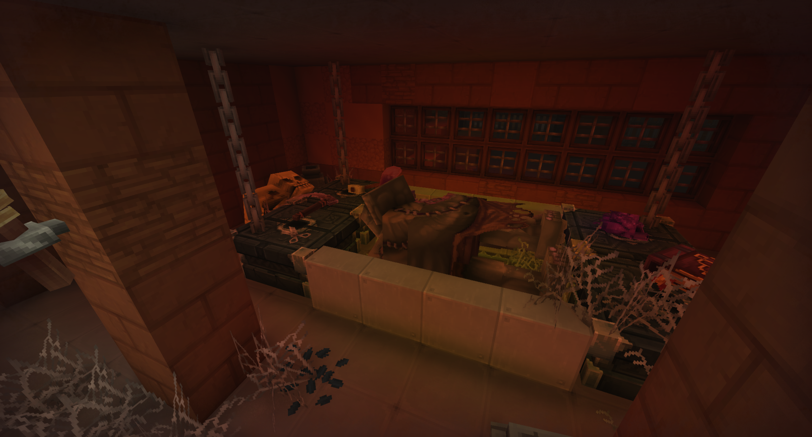
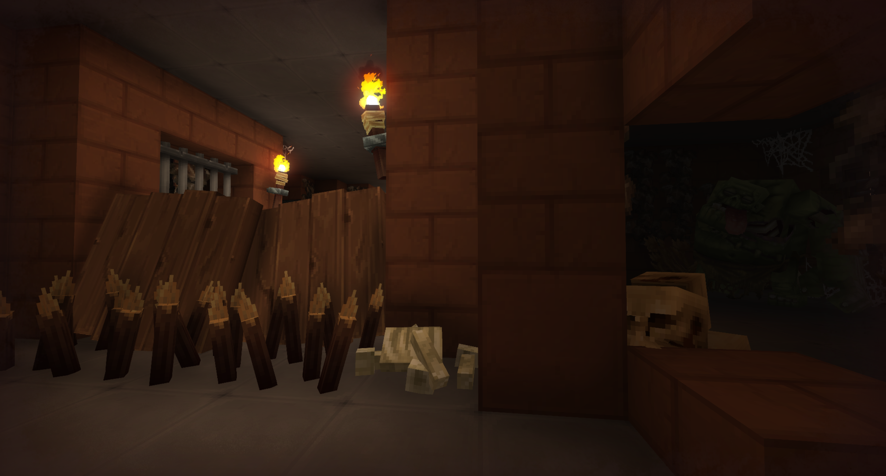
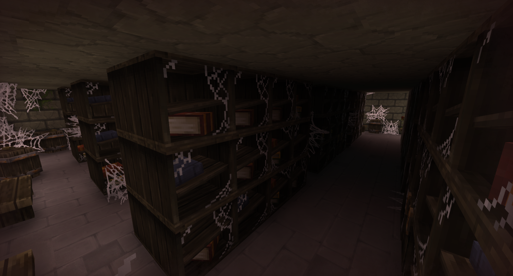
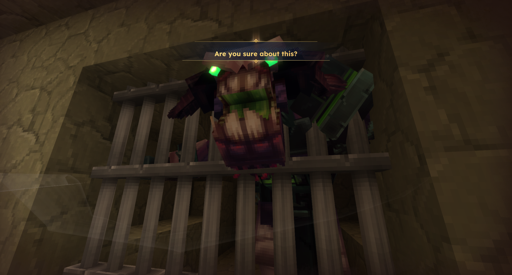

Buried under the weight of classified lies and shifting sands, Blackgate Garrison stands as a chilling, fortified tomb—an experimental military prison where the pursuit of a cure birthed a horror too great for iron bars to contain.
The Blackgate Garrison

| Location Information | |
|---|---|
| Coordinates | X: 617, Z: 787 |
| Area Type | Rural Ruins |
| Mob Threat | Very High |
| Bandit Threat | High |
| Number of Chests | 19 |
| Water Source | Yes |
| Clean Water Source | No |
| Fireplace | No |
| Chef's Stove | No |
| Workbench | No |
| Available Loot | ||
|---|---|---|
| 🍎 Food | ✗ | |
| 🥛 Civilian | Tier 1 | ✗ | |
| ✂️ Civilian | Tier 2 | ✗ | |
| 🛠️ Civilian | Tier 3 | 4 | |
| 🛡️ Military | Tier 1 | ✗ | |
| ⚔️ Military | Tier 2 | 4 | |
| 🏹 Military | Tier 3 | 11 | |
| 🌟 Legendary | ✗ | |
Lore
Buried under the weight of classified lies and shifting sands, Blackgate Garrison stands as a chilling, fortified tomb—an experimental military prison where the pursuit of a cure birthed a horror too great for iron bars to contain.
The Remote Containment
Few remember the true purpose of Blackgate Garrison. Official records describe it as a remote military prison built to house dangerous criminals, captured raiders, and creatures too valuable to kill but too dangerous to release. Its isolated location made escape nearly impossible, while its thick walls ensured that whatever happened within would remain unheard by the outside world. For decades, Blackgate fulfilled that purpose without incident.
Everything changed when a strange affliction began spreading across the frontier. Those who succumbed to it did not always remain dead, and military leaders feared that conventional warfare alone would not be enough to contain it. Rather than destroy the infected, they chose to study them. Blackgate's prison cells were quietly converted into laboratories, its barracks into research halls, and its lower dungeons into containment chambers where prisoners and captured creatures from across the world were subjected to increasingly dangerous, morally unethical experiments. Each new discovery promised a cure—or a weapon—and every success encouraged them to push further.
Unethical Evolution
The experiments produced remarkable results, but they also revealed an unsettling truth. Every species responded differently to the infection. Some became mindless husks, others retained surprising instincts, and a few displayed unexpected resilience. As the researchers expanded their work, the fortress slowly ceased to function as a prison. It became a place dedicated to understanding death itself, with ever larger specimens brought below the fortress for study. Security tightened, new cells were carved beneath the existing ones, and entire sections of the underground complex were sealed away from everyone except the research staff.
The Commander's Log
Commander's Journal — Final Entry
I have ordered all remaining personnel to abandon the eastern laboratories and consolidate within the central keep. The lower containment levels are lost. Captain Hallow reports that every gate below Cell Block C has failed, though he swears none were breached from the outside. The mechanisms were opened from within.
The research staff continue to insist the specimens are behaving unpredictably. I disagree. There is nothing unpredictable about this. We caged starving beasts, filled them with sickness, and convinced ourselves iron bars would always be enough.
The courtyard has fallen. The armory was overrun less than an hour ago, and the western barracks are silent. I can no longer raise Lieutenant Brenner or any of the gate watch. The sounds outside these doors are no longer screams. They have stopped screaming.
I have given the order to destroy every record relating to the experiments. If this fortress cannot be saved, then neither can the knowledge that created this disaster. The lower prison must remain sealed, no matter the cost. There are things beneath us that were never meant to leave their cells.
If anyone should find these pages, know this:
Blackgate did not fall because the walls were too weak. It fell because we believed there were some doors that should be opened simply because we possessed the keys.
The official report, if one is ever written, will speak of an earthquake or fire. It will be a lie. It must be.
— Commander Aldren Voss, Blackgate Garrison
A Cataclysm of Lies
The end came without warning. Containment failed across multiple laboratories, and within hours the fortress descended into chaos. Prisoners escaped alongside the very creatures meant to remain confined, while soldiers found themselves fighting the horrors they had helped create. No request for reinforcements was ever received, and no survivors were officially recorded.
In the years that followed, the kingdom declared that Blackgate Garrison had been destroyed by a catastrophic earthquake, striking it from military records and abandoning the site to the desert. Whether the lie was told to calm the public, or to keep curious explorers away from the abominations still waiting in the dark, remains unknown.
Present Day
For modern scavengers, Blackgate Garrison is a highly dangerous, high-risk destination. The upper courtyard and ruined barracks hold standard military gear, left-behind ammunition, and sturdy mid-tier combat attire. However, the true danger lies in descending into the sealed cell blocks below. Those who dare to pick the locked containment gates will find high-tier tactical gear and rare experimental weaponry, but they must also face the surviving, mutated subjects of the garrison's unethical legacy.
The walls of Blackgate Garrison were built to keep secrets in, not to keep the wilderness out. If you choose to descend into the lower cells, remember the warning of Commander Voss—some doors are better left locked.
Gallery






